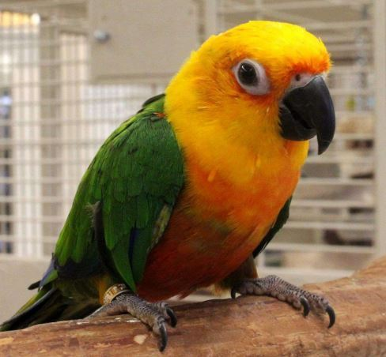
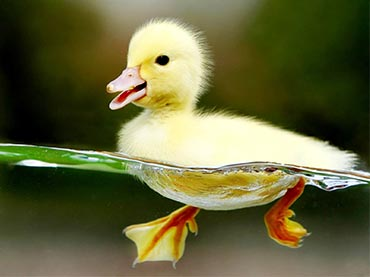
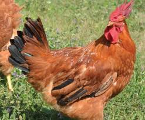

Pick your bird!
Parrots are members of the order Psittaciformes, which includes more than 350 bird species, including parakeets, macaws, cockatiels and cockatoos, according to the Integrated Taxonomic Information System (ITIS). Though there are many types of parrots, all parrot species have a few traits in common. For example, to be classified as a parrot, the bird must have a curved beak, and its feet must be zygodactyl, which means there are four toes on each foot with two toes that point forward and two that point backward.
 Ducks are birds. Ducks are also called ‘Waterfowl’ because they are normally found in places where there is water like ponds, streams and rivers. Ducks are related to Geese and Swans. Ducks are sometimes confused with several types of unrelated water birds with similar forms, such as loons (an aquatic bird found in many parts of North America and northern Europe) or grebes (freshwater diving birds) and coots (medium-sized water birds which are members of the Rail Bird family).
 Chicken, (Gallus gallus), any of more than 60 breeds of medium-sized poultry that are primarily descended from the wild red jungle fowl (Gallus gallus, family Phasianidae, order Galliformes) of India. The chicken is perhaps the most widely domesticated fowl, raised worldwide for its meat and eggs.